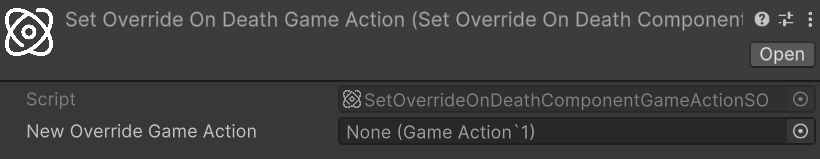
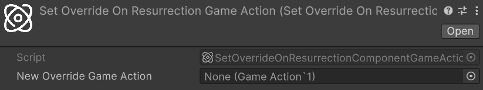
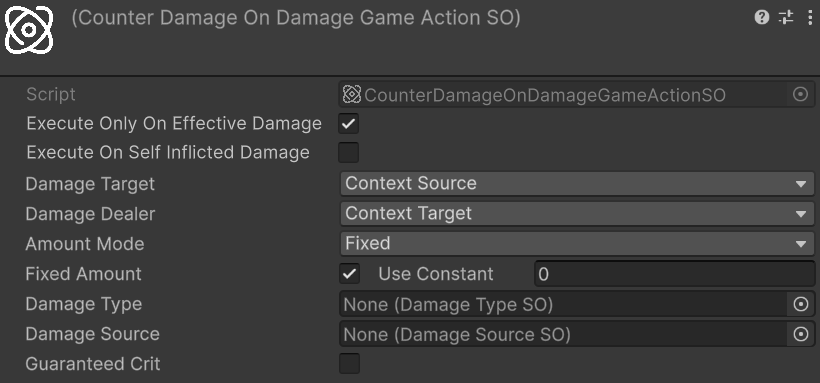

Game Actions
Astra RPG Health extends the framework's GameAction system with a set of health-specific actions for resurrection, override management, and damage reactions. Each action is a ScriptableObject built on top of GameAction<TContext> and integrates directly with EntityHealth and the event system.
For an introduction to the GameAction execution model, execution with Unity Events, and the difference between ExecuteAsync and RunFireAndForget, refer to the Game Actions section of the Astra RPG Framework documentation.
Resurrect
ResurrectGameActionSO<TContext> is the abstract base action for resurrecting a dead entity. It locates the EntityHealth component on the context object and calls the appropriate convenience Resurrect overload — either with a percentage of max HP or with a flat HP amount — depending on the inspector configuration.
The sealed ResurrectComponentGameActionSO is the ready-to-use instantiable variant with Component as the context type. Its inspector fields, configuration options, and a common automatic-respawn use case are documented in the Resurrect Game Action section of the Resurrection workflow.
Set Override On Death
Relative path: Astra RPG Framework/Game Actions/Context: Component/Set Override On Death
SetOverrideOnDeathGameActionSO<TContext> assigns or clears the OverrideOnDeathGameAction property on an entity's EntityHealth component at runtime. It gives any system or workflow the ability to redirect what happens the next time a specific entity dies, without modifying the global configuration or the entity's inspector directly.
The configurable field is:
- New Override Game Action: the
GameAction<Component>to assign as the entity's next on-death action. Leave this field empty to clear any previously set override, causing the entity to fall back to the Default On Death Game Action from the package configuration
Use Cases:
- One-shot death mechanics: place a
SetOverrideOnDeathGameActionSOinside aCompositeGameActionthat first resurrects the entity and then clears the override (by leaving New Override Game Action empty). The first time the entity dies the override fires — resurrecting it — and removes itself so subsequent deaths use the default behavior - Dynamic difficulty: assign a stronger or weaker on-death routine to a specific entity at runtime based on game state
Note
The action resolves EntityHealth from the context by casting directly (when the context already is an EntityHealth) or via GetComponent. If neither succeeds, a warning is logged and the action does nothing.
The sealed SetOverrideOnDeathComponentGameActionSO is the instantiable variant with Component as the context type:

Set Override On Resurrection
Relative path: Astra RPG Framework/Game Actions/Context: Component/Set Override On Resurrection
SetOverrideOnResurrectionGameActionSO<TContext> mirrors its death counterpart: it assigns or clears the OverrideOnResurrectionGameAction property on an entity's EntityHealth component, redirecting the post-resurrection behavior the next time that entity is resurrected.
The configurable field is:
- New Override Game Action: the
GameAction<Component>to assign as the entity's next on-resurrection action. Leave this field empty to clear the override and fall back to the Default On Resurrection Game Action from the package configuration
The sealed SetOverrideOnResurrectionComponentGameActionSO is the instantiable variant with Component as the context type:

Counter Damage
CounterDamageGameActionSO<TContext> is the abstract base for actions that react to a damage or death event by immediately inflicting a new hit in return. The action reads role assignments and a damage configuration from the inspector, resolves the correct entities from the event context, and calls EntityHealth.TakeDamage on the resolved target.

CounterDamageGameActionSO<TContext> implements IEffectInstigator, so it registers itself as the instigator of the counter-damage it produces. Downstream listeners can compare context.Instigator against the action asset to identify and filter self-triggered events — the primary mechanism for preventing infinite damage cycles (see Preventing Infinite Cycles below).
TContext must implement IHasTarget, IHasPerformer, IHasInstigator, and IHasAmount. The compatible built-in context types are DamageResolutionContext, EntityDiedContext, and PreDamageContext.
The top-level configurable fields are:
- Execute Only On Effective Damage: when enabled (the default), the counter-damage fires only if the incoming
Amountis non-null and greater than zero. Disable to also react to prevented or zero-damage hits - Execute On Self Inflicted Damage: when enabled, the counter-damage fires even when the instigator of the incoming event is this same action asset. Leave disabled (the default) to suppress the counter when this action already caused the incoming event, preventing infinite loops
- Config: the inline
PreDamageContextConfigblock that describes the counter-damage to apply (see Counter Damage Configuration below)
Counter Damage Configuration
The Config block is a serialized PreDamageContextConfig that fully defines the counter-damage: who takes it, who is attributed as the dealer, how the amount is computed, and what damage type and source are applied.
- Damage Target: which entity from the incoming context receives the counter-damage.
ContextSourcetargets the entity that performed the original action (context.Performer);ContextTargettargets the entity that received it (context.Target) - Damage Dealer: which entity from the incoming context is attributed as the dealer.
ContextSourcemaps to the performer,ContextTargetmaps to the original target, andNoneproduces system-initiated damage with no attribution - Amount Mode: determines how the counter-damage amount is computed:
Fixed— a constant value from a Fixed AmountLongRefassetScalingFormula— computed at runtime from a Scaling Formula asset (dealer maps to Self, target to Target). If the dealer is null (system damage), the formula falls back toCalculateValue(target, target)with a warningDamageFromContext— a fraction of the incomingAmount, scaled by the Damage From Context Multiplier (e.g.0.5= 50% of the received damage)
- Damage Type: the
DamageTypeSOapplied to the counter-damage - Damage Source: the
DamageSourceSOattributed to the counter-damage - Guaranteed Crit: when enabled, the counter-hit is always flagged as a critical
- Use Crit Stat: when Guaranteed Crit is active, reads the critical multiplier from the Crit Multiplier Stat on the dealer entity instead of from the inline Critical Multiplier value
- Crit Multiplier Stat: the stat on the dealer entity whose value is used as the critical multiplier (e.g. a stat value of
200becomes2.0×). Active only when both Guaranteed Crit and Use Crit Stat are enabled - Critical Multiplier: the inline critical multiplier as a percentage (e.g.
150=1.5×). Active when Guaranteed Crit is enabled and Use Crit Stat is disabled
Warning
If Damage Type or Damage Source is left unassigned, the system logs a warning at runtime and the resulting PreDamageContext may behave unexpectedly.
Let's see a concrete example of a damage-reflection setup. Entity A attacks entity B, which has a CounterDamageOnDamageGameActionSO listening to its DamageResolutionGameEventListener. When the hit resolves:
context.Performer=A(the attacker)context.Target=B(the defender)context.Amount= the damage actually dealt
To reflect damage back at A with a fixed amount attributed to B, configure:
- Damage Target =
ContextSource(the counter-damage targets the performer,A) - Damage Dealer =
ContextTarget(the counter-damage is dealt by the original target,B) - Amount Mode =
Fixed, with Fixed Amount set to the desired flat value
This example assumes no other damage modifications are active.
Real-World Examples
Two passive ability implementations from the sample scene illustrate CounterDamageGameActionSO in concrete setups.
Vengeance in Death (Assassin passive) uses CounterDamageOnDeathGameActionSO to strike back at the attacker with a guaranteed critical physical hit equal to 80% of the lethal damage received. Damage Target is ContextSource (the attacker), Damage Dealer is ContextTarget (the Assassin), Amount Mode is DamageFromContext with a multiplier of 0.8, and Guaranteed Crit is enabled with Use Crit Stat pointing to the Assassin's critical multiplier stat. To avoid firing on every entity's death, the action is wired to a dedicated EntityDiedGameEvent assigned as an extra death event on the Assassin's EntityHealth rather than to the global death event. See Vengeance in Death in the Samples page for the full setup.
Glass Cannon (Sorcerer passive) uses CounterDamageOnDamageGameActionSO to deal bonus magical self-damage equal to 15% of the Sorcerer's Magic Power every time the Sorcerer is hit. Damage Target is ContextTarget (the Sorcerer itself), Damage Dealer is None, Amount Mode is ScalingFormula with a formula that evaluates 15% of Magic Power. To avoid reacting to other entities' damage events, the action is wired to a dedicated DamageResolutionGameEvent assigned as an extra damage-taken event on the Sorcerer's EntityHealth. Execute On Self Inflicted Damage remains disabled so the self-damage this action produces does not re-trigger the action. See Glass Cannon in the Samples page for the full setup.
Preventing Infinite Cycles
Counter-damage actions can produce infinite loops: A damages B, B counters A, A's counter reacts to B's hit, and so on. Three complementary mechanisms help contain runaway chains:
- Disable Execute On Self Inflicted Damage (default): because
CounterDamageGameActionSOimplementsIEffectInstigatorand passes itself as the instigator of the counter-damage it produces, any subsequent event caused by that counter carries the action asset ascontext.Instigator. When Execute On Self Inflicted Damage is disabled, the action skips execution whenever the incoming instigator matches itself — suppressing a single action from reacting to its own direct output - Enable Execute Only On Effective Damage (default): zero-damage or prevented hits do not trigger a counter, reducing the chance of a chain reaction starting from a suppressed hit
- Reactability marker: every damage and heal context carries an
IsReactableflag. WhenCounterDamageGameActionSOreceives a context withIsReactable == false, it skips execution immediately. EveryPreDamageContextbuilt by the action always hasIsReactableset tofalse, and this propagates automatically to the resultingDamageResolutionContextand, if the hit is lethal, to theEntityDiedContext
The third mechanism is what breaks the mutual counter-chain that the first two cannot. If entity A owns counter action CDA and entity B owns counter action CDB: A hits B with a first-order IsReactable = true event → CDB fires, hits A with IsReactable = false → CDA receives a non-reactable context and skips — the chain ends after one counter.
The IsReactable flag is also available on PreHealContext and ReceivedHealContext, following the same convention. Use .WithIsReactable(false) on the builder when constructing any secondary heal (for example, a passive ability that heals on receiving damage) to prevent heal-triggered chains.
Note
Code that constructs PreDamageContext instances directly — for example, a custom passive ability that deals secondary damage in response to an event — should call .WithIsReactable(false) on the builder when the resulting hit is a secondary effect and should not trigger further reactive systems.
Warning
Enabling Execute On Self Inflicted Damage removes the self-instigator guard. Only do so when the action is intentionally designed to react to its own outputs, and ensure an alternative termination condition is in place.
Available Variants
Three sealed implementations are provided, each bound to a specific context type:
CounterDamageOnDamageGameActionSO— context:DamageResolutionContext. Reacts to a resolved damage event. Connect to aDamageResolutionGameEventListener's UnityEvent response and selectExecuteAsyncForUnityEvent(DamageResolutionContext)as the dynamic invocation target. Created viaAstra RPG Framework/Game Actions/Context: DamageResolutionContext/Counter DamageCounterDamageOnDeathGameActionSO— context:EntityDiedContext. Reacts when an entity dies. Connect to anEntityDiedGameEventListener's UnityEvent response and selectExecuteAsyncForUnityEvent(EntityDiedContext)as the dynamic invocation target. Created viaAstra RPG Framework/Game Actions/Context: EntityDiedContext/Counter DamageCounterDamageOnPreDamageGameActionSO— context:PreDamageContext. Reacts before the damage calculation pipeline runs. Connect to aPreDamageGameEventListener's UnityEvent response and selectExecuteAsyncForUnityEvent(PreDamageContext)as the dynamic invocation target. Created viaAstra RPG Framework/Game Actions/Context: PreDamageContext/Counter Damage
Note
When using CounterDamageOnPreDamageGameActionSO, context.Amount is the pre-modifier base damage amount rather than the final resolved damage. The Execute Only On Effective Damage check therefore evaluates the base amount, not the post-calculation result.
Composite Pre-Damage Context
Relative path: Astra RPG Framework/Game Actions/Context: PreDamageContext/Composite
CompositePreDamageContextGameActionSO is a sealed implementation of the framework's CompositeGameAction<PreDamageContext>. It executes a list of GameAction<PreDamageContext> actions in sequence, passing the same PreDamageContext to each. Use it to chain multiple pre-damage context actions — for example, a CounterDamageOnPreDamageGameActionSO followed by a state modifier — within a single PreDamageGameEventListener response.